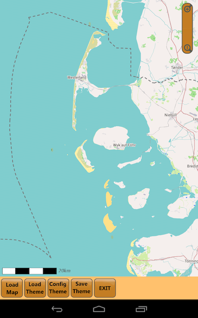
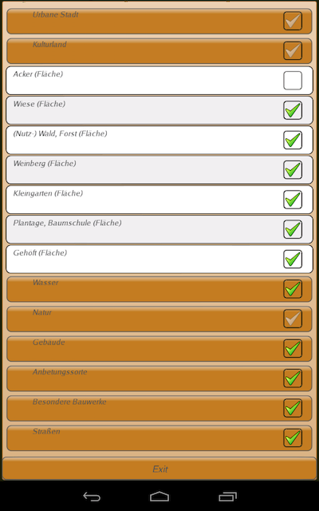

Die Anzeige aller Kartenelemente in den Freizeitkarten kann individuell sichtbar oder unsichtbar gemacht werden. Dies ist über die zusätzliche Android-App "Theme-Configurator" möglich. Wirksam werden die Änderungen sofort nach (Re-)Start der Karten-App (Locus Map, OruxMaps, ...). Der Theme-Configurator ermöglich somit eine in weiten Teilen individuelle Anpassung der angezeigten Karte. So können z.B. im Flachland die Höhenlinien ausgeblendet werden, oder in Städten die ÖPNV-Haltestellen eingeblendet werden.
|  Hauptmenü und Kartenansicht. |
 Konfiguration der Kartenfeatures. |
Anpassung von Kartenfeatures:
- Load Map: Karte laden
- Load Theme: Theme (Kartendesign) laden
- Config Theme: Kartenfeatures ein- oder ausschalten
- Save Theme: Änderungen sichern
Hinweise zur Installation:
- der Theme-Configurator befindet sich im Status "Betatest"
- die Installation im Android-Device ist manuell vorzunehmen:
- Einstellungen -> Sicherheit: Installation von Apps aus anderen Quellen als dem Play Store zulassen
- Theme-Configuration (APK) downloaden
- heruntergeladene APK-Datei anklicken; Installation bestätigen
Download: Theme-Configurator (0.4.12 beta)